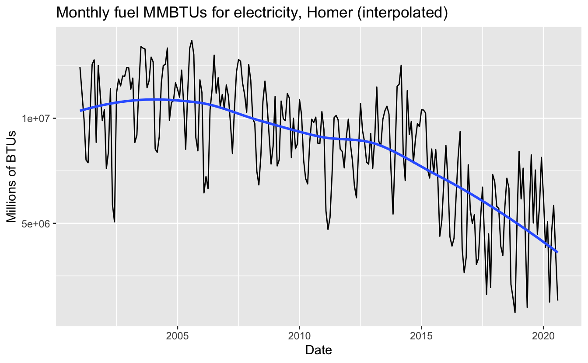
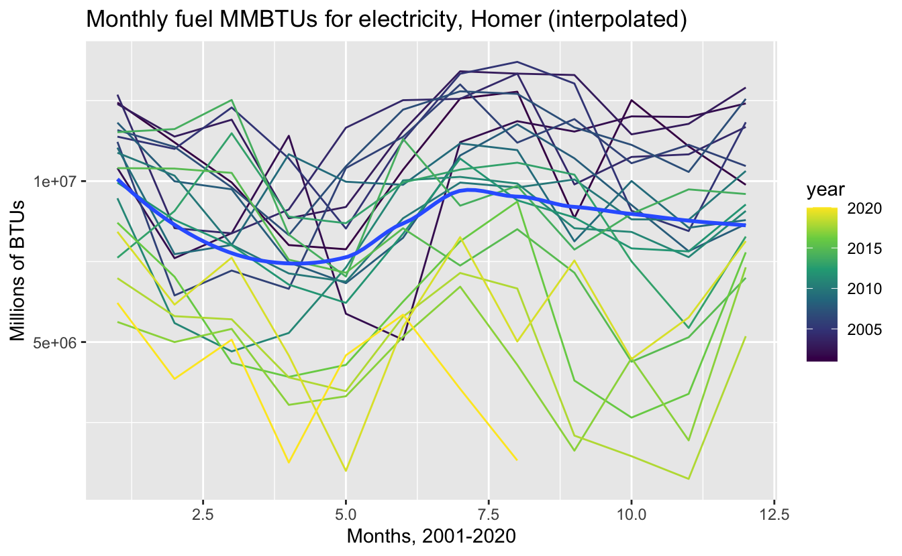
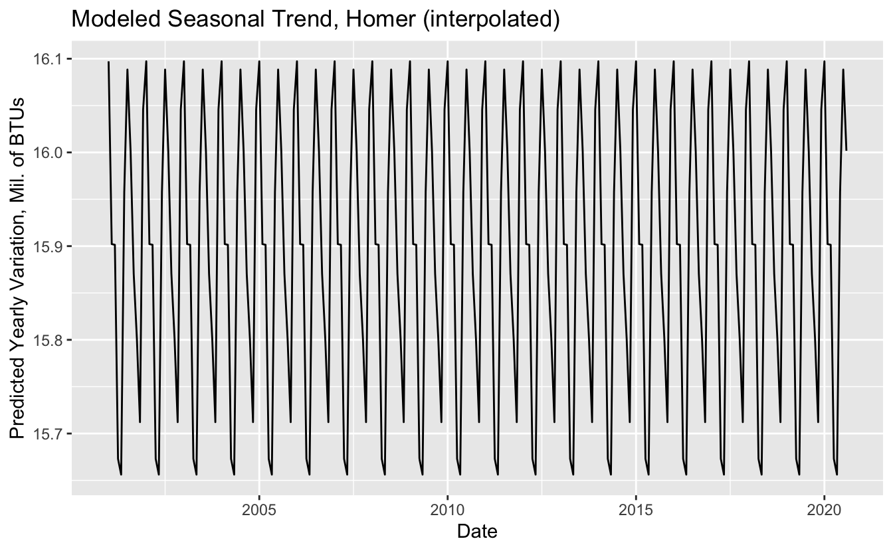
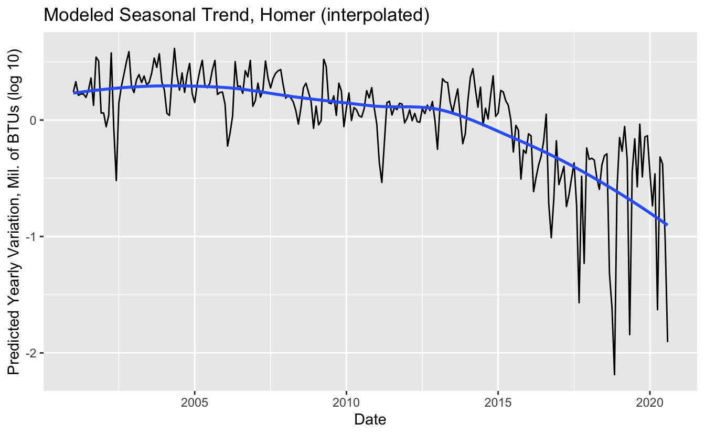
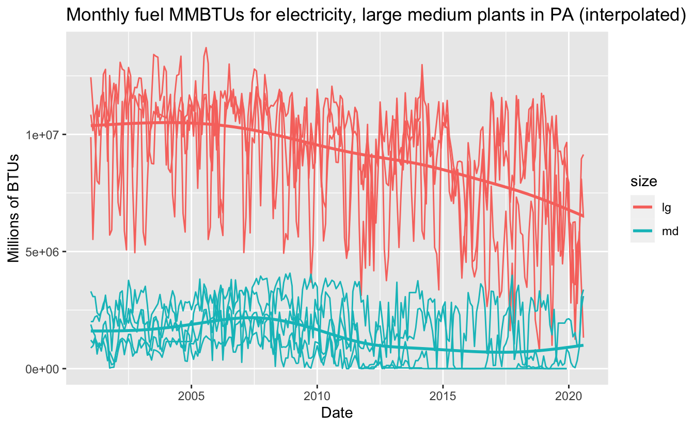
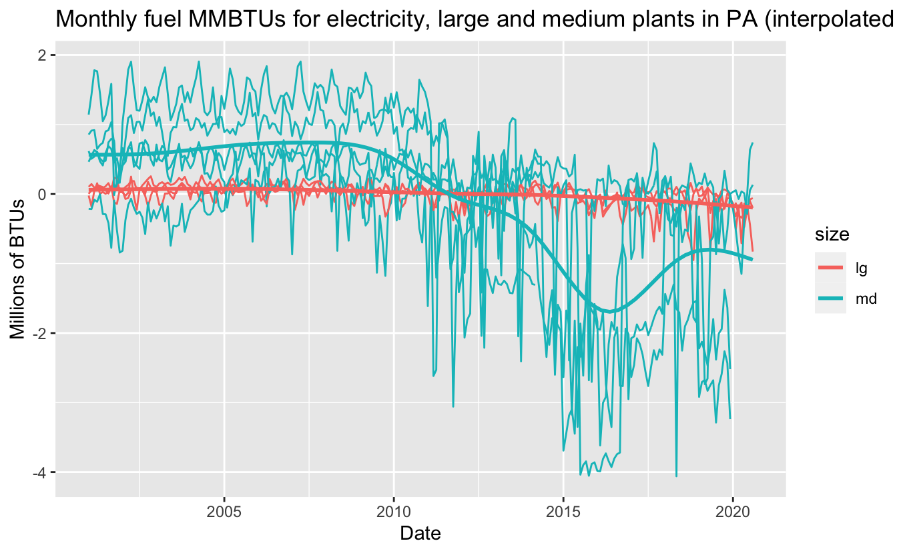

smokey lucy furnace
Modeling Seasonal Variation in Fuel Consumption
This is a second post in a series on data analysis for “electric fuel consumption” for plants in Pennsylvania–that is, the fossil fuels consumed by power plants to bring us electricity. I will continue to adapt the modeling strategy in this video from Hadley Wickham.
In the previous post, we
- noticed some peculiarities of our data set,
- interpolated some zero values,
- eyeballed some clustering,
- excluded a cluster, and
- applied trend lines per cluster.
The data is still rather jagged. How much of this is due to seasonal variation rather than fluctuating demand? We should be able to discern the trends more clearer once this is removed. Let’s model it, first by starting with a single instance, and then apply that to the rest of our sample data set.
library(tidyverse)
library(glue)
library(eia)
# set with usethis::edit_r_environ("project")
eia_set_key(Sys.getenv("EIA_API"))PSA
An aside! This post got me thinking about my own electricity consumption. It turns out there’s a company that supplies electricity from 100% renewable sources at comparable rates, all from Pennsylvania–which I figure is better, since it sends the local demand signal. Our home is in the process of making the switch, I’ll keep you posted. I have no connection to the company.
For the Pittsburgh area: https://www.communityenergyinc.com/products/duquesne-light-pa
Model
# path to files from previous post
path <- "../2020-11-12-pa-plant-carbon-emissions/pa_elec_cons_plants_big.csv"
plants_big <- read_csv(path)Let’s get started by looking at a single plant: Homer City Generating Station.
homer <- plants_big %>% filter(str_detect(name_plt, "Homer"))
homer %>% count(name_plt)
#> # A tibble: 1 x 2
#> name_plt n
#> <chr> <int>
#> 1 Homer City Generating Station 236
homer %>% ggplot(aes(my_date, value)) +
geom_line(aes(group = name_plt)) +
geom_smooth(se = FALSE) +
labs(x = "Date",
y = "Millions of BTUs",
title = "Monthly fuel MMBTUs for electricity, Homer (interpolated)")
Let’s align each year and see if there’s a trend.
homer %>% ggplot(aes(month, value)) +
geom_line(aes(group = year, color = year)) +
scale_color_viridis_c() +
geom_smooth(se = FALSE) +
labs(x = "Months, 2001-2020",
y = "Millions of BTUs",
title = "Monthly fuel MMBTUs for electricity, Homer (interpolated)")
#> `geom_smooth()` using method = 'loess' and formula 'y ~ x'
We see a modest dip during the spring. Perhaps this is when residents use the least electricity for climate control. We can see that pattern for the other months seems to shift in the later years. We should find out if this pattern is consistent across years and locations. For now, let’s model this variation as if it was consistent across time and location.
library(modelr)
homer_mod <- lm(log(value) ~ factor(month), data = homer)
homer %>%
add_predictions(homer_mod) %>%
ggplot(aes(my_date, pred)) +
geom_line() +
labs(x = "Date",
y = "Predicted Yearly Variation, Mil. of BTUs",
title = "Modeled Seasonal Trend, Homer (interpolated)") Here’s the seasonal variation that will be removed. Note that it repeats every year. Now let’s plot the residual variation after the seasonal variation is removed by our model.
homer %>%
add_residuals(homer_mod) %>%
ggplot(aes(my_date, resid)) +
geom_line() +
geom_smooth(se = FALSE) +
labs(x = "Date",
y = "Predicted Yearly Variation, Mil. of BTUs (log 10)",
title = "Modeled Seasonal Trend, Homer (interpolated)")
#> `geom_smooth()` using method = 'loess' and formula 'y ~ x' It’s a little less jagged! Interestingly, the predictions are furthest in the later years, suggesting that some other source of variation is driving the fluctuations.
Extend the model to every plant
by_plant <- plants_big %>%
group_by(name_plt) %>%
nest()
plant_model <- function(df) {
lm(log10(value + 1) ~ factor(month), data = df)
}
detrended <- by_plant %>%
mutate(model = map(data, plant_model),
resids = map2(data, model, add_residuals)) %>%
unnest(resids)
plants_big %>% ggplot(aes(my_date, value, color = size)) +
geom_line(aes(group = name_plt)) +
geom_smooth(se = FALSE) +
labs(x = "Date",
y = "Millions of BTUs",
title = "Monthly fuel MMBTUs for electricity, large medium plants in PA (interpolated)")
#> `geom_smooth()` using method = 'gam' and formula 'y ~ s(x, bs = "cs")'
ggplot(detrended, aes(my_date, resid, color = size)) +
geom_line(aes(group = name_plt)) +
geom_smooth(se = FALSE) +
labs(x = "Date",
y = "Millions of BTUs",
title = "Monthly fuel MMBTUs for electricity, large and medium plants in PA (interpolated, without seasonal trend)")
#> `geom_smooth()` using method = 'gam' and formula 'y ~ s(x, bs = "cs")'
Interesting. If we compare the seasonally detrended plot to the naive plot from our earlier post, it appears that much of the variation in the large plants was due to yearly variation. Meanwhile, the medium-sized plants were seeing a decline in fuel consumption since around 2009, only to have this rebound a bit since 2016. Could this correspond to policy changes in Pennsylvania?
In this post, we modeled across each year as if they were equivalent within each plant, despite some rather obvious indications that they probably were not. Instead of this, we could model across power plants but within each time period. Sharing information across both series and time is the specialty of Gaussian Processes. We will explore this more sophisticated model in a future post.